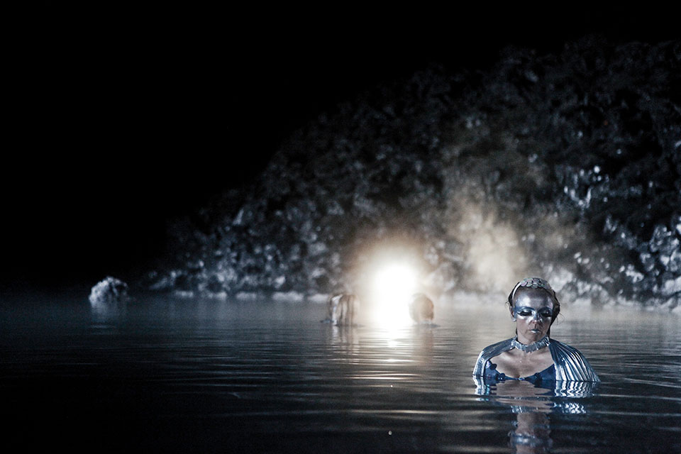
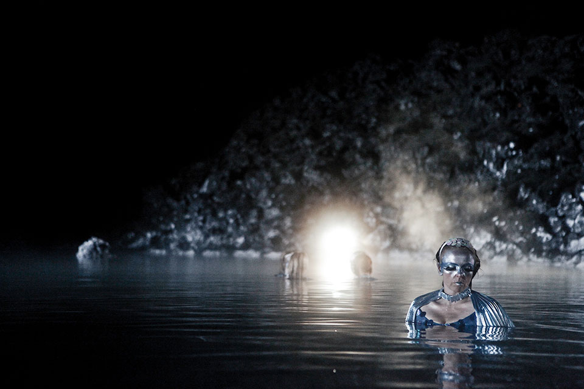

Special Episode: Exocoetidae
The Blue Lagoon special focuses around rebirth with the concentration on confidence. The women became water creatures conceptually based around flying fish. Shying away from the observer they gradually engage and then throw themselves up from the water, exhibiting their splendor.
The video works from the piece are 2 videos. Night and Day.
- Concept and Direction: Kitty Von-Sometime
- Director of Photography: Hrafn Garðarsson
- Editor: Gunnar B. Gudbjornsson
- Video Grading and Post Production: Michael Todd
- Official Photographer: Óskar Hallgrímsson
- Behind the Scenes Photography: Jeaneen Lund
- Production Manager: Selma Karlsdóttir
- Lighting Gaffer: Hinrik Jónsson
- Lighting Assistant: David Ramsey
- Camera Assistant: Þór Elíasson
- Head Runner: Friða Björk Einarsdóttir
- Runners: Valdís Bára Guðmundsdóttir and Hildur Hlíf Hilmarsdóttir
- Lead Makeup: Nenita Aguilar, Flóra Buenano, Linda Karen Steinarsdóttir
- Costumes: Tom Yong
- Official Music: Written and performed by Karin Tatoyan
- 28 July 2012
 
